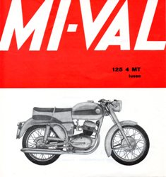
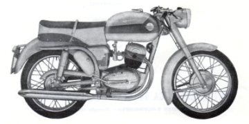
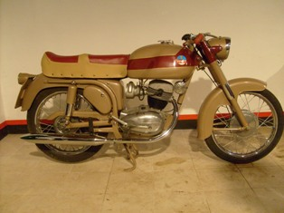
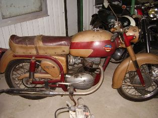

MODELLO 125 4MT Lusso
|
 |
 |
 |
|
 |
||
Il modello rappresentato nel volantino mostra numerose differenze rispetto agli esemplari che ho osservato nella realtà. Questo mi fa pensare che l'immagine nel volantino sia relativa ad un prototipo.
SCHEDA TECNICA
MOTORE: Monocilindrico 4 tempi, alesaggio e corsa 53 x 56 mm
Cilindrata effettiva 123,5 cc, potenza effettiva 6,5 CV a 5500 giri, rapporto di compressione 1:7
Velocità massima 90 km/h
Carburatore Dell'Orto ME 18 BS
Accensione a volano magnete
Cambio a 4 rapporti, trasmissione primaria ad ingranaggi, trasmissione secondaria a catena
Frizione in bagno d'olio a dischi multipli
TELAIO A culla singola
Forcella anteriore telescopica semiidraulica
Sospensione posteriore a forcellone oscillante con ammortizzatore idraulico
Ruota anteriore: 2,50 x 18 Ruota posteriore: 2,75 x 18
Capacità serbatoio 15 litri
Potenza impianto elettrico 30 W
Consumo norme CUNA 2 litri/100 km
Candela Marelli CW 250 A